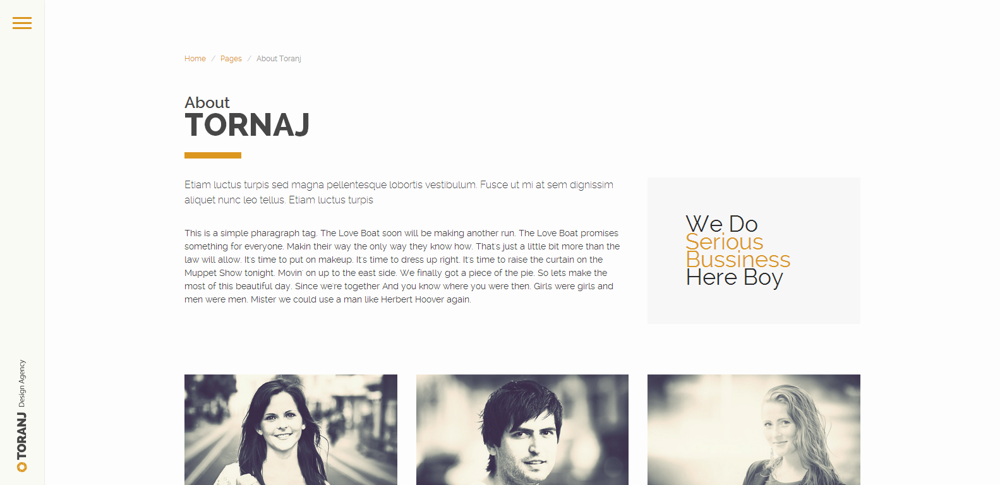
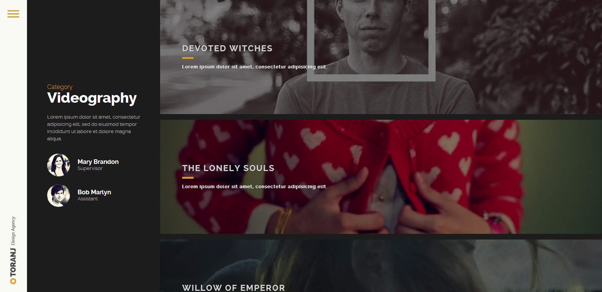
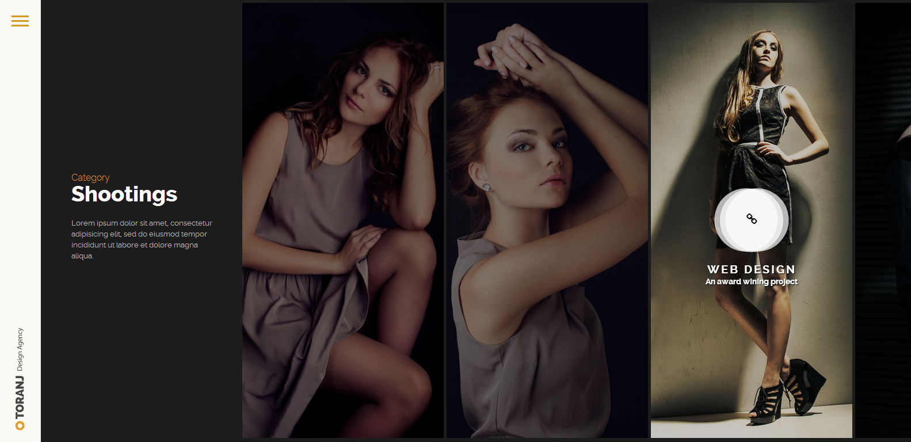
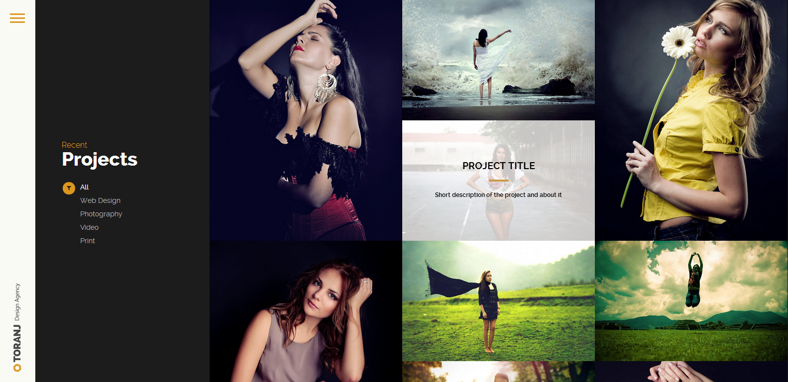
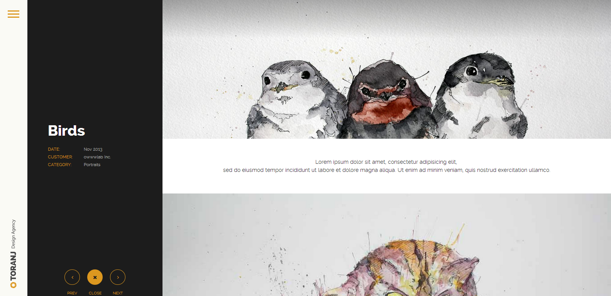
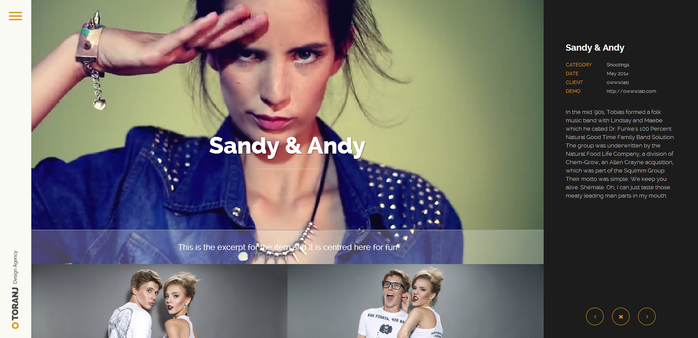
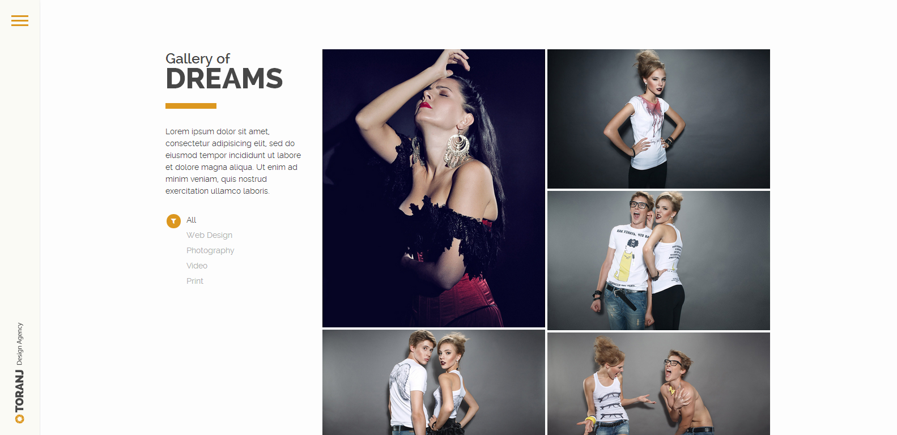

w-Post with a Featured Image
Introduction toToranj HTML template
We want to thank you for being interested to our work and purchasing the product, it is a great pleasure for us.
In this documentation file we will review features of the theme and important issues about various aspects of the theme.
Contents
Whom is this for?
This file is for who has purchased the theme from Themeforest marketplace and wants to get familiar with the features of the theme. Normally HTML templates like the current item is used by other developers who want to integrate it with their own software or CMS, but there are always novice people who want to use this as their own website. Reading this documentation needs intermediate knowledge of HTML and CSS. You should be able to read and understand HTML files and follow the CSS files to get the idea of how things work and how to customize them.
How to use this documentation?
Anyone can use this page as a reference to find features and sample codes of the templates. Also there is a HOW TO section that you can find frequently asked questions.
Please note that you should read the HTML code to fully understand the code, but having this page as a guide will be useful for you, so please don't rely on this page if you want to fully understand how things work.
How to get support?
If you found yourself in a situation that you needed more advanced explanations or any other concept which is beyond this documentation file, don't hesitate to contact our support staff by sending an email to owwwlab@gmail.com
How to update?
We release updates free of charge, they will regularly be some bug fixes, but you should read the changes and implement them to your code manually. Updates will be released within Themeforest and you can be notified by following us at twitter @owwwlab
How to install?
The theme uses Ajax and some PHP code. So you will need a web server to be able to test and edit. We recommend using a local web server like WAMPP or XAMPP.
ThemeLayouts
We will discuss various layouts of the pages that you can build with this theme. There are some details that you should be careful about them so please read this section carefully.
Contents
Basics
Each page follows the structure of a regular HTML page with regular tags we will not discuss HEAD tag here, let's jump into the body tag and see what you should consider here.
You can find this pattern of the code at BODY of any pages of the theme:
The contents of the #sidebar is the same for all the pages and layouts, but the mark-up inside the #main-content will make the changes of pages.
Sidebar menu structure
Here is the main structure of the sidebar:
The code is pretty much self explaining but you should notice the presence of the hyper-link at line 17. As you may have noticed by default there is a vertical bar at the side, by clicking on it the sidebar slides in and pushes the content of the page to the right. So, that a#menu-icon is responsible for the vertical bar.
Navigation Menu Structure
The navigation which is wrapped by div#side-contents is a simple ul element.
Notice: You can either have one-level menu or two-level menu. Theme does not support multiple level menu.
How about current menu which indicates that the user is viewing this page?
Well, that is pretty simple, you just need to add a class to the corresponding li item. like this:
At two-level menus the situation is similar but the parent ul also needs a class of .current-menu-parent. See below:
Social icons at side footer
We have put the social icons of your service of company at the footer of the sidebar, but this is not restrict, you can put any important contents there. For the record, this is the mark-up for the social icons
Please notice that we have used the FontAwesome icon library here, you can find more information about usage and further readings about it at the External libraries section of this documentation file.
Regular Pages
What Do we mean by a Regular page?
Below image is what we refer to a regular page in this text.
This is really simple, just put your contents inside this structure:
Breadcrumbs
You may need a breadcrumb at the top of your regular-page and you can do that by following this pattern of code:
Above code will produce this:
Back to top button
We have included and back-to-top button at the very end of some pages. It is a simple a elements which it's behavior is controlled by JS to smoothly scroll to top of the page.
Rows and Columns
You should use separating DIVs to structure your content in a regular-page. Try to think of it as a page with some rows. In turn each row can have some columns. This template follows the grid design of Bootstrap framework. So as a simple example you can have two rows in your page.
If you want to have columns inside a row, you can do as follow, but please refer to Bootstrap documentation to get more specific information.
Vertical distances
You will definitely need to add some space between two rows (or any elements) we have provided four asset classes for you to add various vertical spaces between your elements
.mb-small.mb-medium.mb-large.mb-xlarge
simply add this classes to the .row element.
Regular-page with Sidebar
Adding a sidebar to a regular page is a simple job. You just need to add a column to the main row of the page see below:
Notice: Don't forget to add .regular-sidebar class to the sidebar col element (line 19)
OurPage
. . .
Portfolio pages
There are various portfolio pages, some of theme share the same structure but some are different. We will review the structure of each layout.
Horizontal Portfolio
Structure
.page-sideis the wrapper for the sidebar..page-mainis the wrapper for contents of the page.#ajax-folio-loaderis the loading element for page transition via AJAX#ajax-folio-itemis the container for new contents which will populated via AJAX.ajax-elementindicates the classed that are associated with the ajax call.
Sidebar of portfolio
Sidebar of some portfolio layouts share the same layout, typically there is a title which is vertically centred
Browse Category Visual effect
Horizontal portfolio items
The structure of a horizontal portfolio is as follows
. . .. . .. . .
Please note that the .tj-hover-3 is responsible for the type of overlay on each item and .set-bg will add a handler of JS to handle the background image of the item.
Inside each portfolio item there will be a hyper-link with .ajax-portfolio class.
Video Portfolio
Video portfolio is essentially the same thing as above but just the item is different, let's see how
Notice that the only change is replacement of img tag with a div with class of .owl-videobg, you can get more info about the video backgrounds at video section of this doc.
Vertical Portfolio
You may find yourself in a situation that you need to show you thumbnails in a vertical way but in a horizontal order, then this layout is perfect for you.
The main structure is very similar to Horizontal Portfolio but you need to add .abs and .dark-template classes to the main-content:
. . .
Also add .horizontal-folio-wrraper to the .page-main:
. . .
And the contents of the portfolio list will be like this:
Grid Portfolio

Grid portfolio uses jQuery isotope plugin. The main layout is the same as previously described except few changes:
Each item in the list is as follow:
In case you want to add a gutter between grid elements, remove the .no-padding class.
Filtering
if you want to add filtering ability, add this to the .page-side:
Then you should add corresponding classes to your .gp-items like this:
. . .. . .
Portfolio single

This page also uses the same layout that we have been discussing. The important difference is the contents of the .page-main, that you need to add .sync-width-parent to the .page-wrapper and the contents of the page will be structured as so:
 . . .
. . .
Portfolio video
In case you want to use a video instead of an Image as the cover for your portfolio item, you can do as such easily:
Portfolio single alt

This page is an alternative for your portfolio page. The main structure of the layout is
Note to the .rightside-folio and .move-with-js classes, they are essential.
the header section with the parallax title needs this structure:

Title
This is the excerpt for the item
Portfolio video alt
In order to add a video instead of image you should change the .project-header to this mark-up:
Title
This is the excerpt for the item
Gallery pages
Full screen galleries
One type of Galleries that you can use for your site are full screen gallerias. They come with variations:
- Vertical thumbnails
- Horizontal thumbnails
- Without thumbnail
Also full screen galleries support various media types:
- Images
- local hosted videos
- Youtube hosted vedeos
- Vimeo hosted videos
The simplest layout for a gallery is :
 . . .
. . .
in order to add a vertical thumbnail bar you need to modify your code the mark-up is pretty expressive
If you want it horizontal, then it is even easier:
Available options for fullscreen galleries
We have added some functionallity to give you the control over galleres behavior. Folowing attributes must be added to the main gallery wrapper which has class tj-ms-slider you can check masterslider documentation for more informations and options
- data-width
width of slider or gallery if it needs to have a fixed width
-
data-height
height of slider or gallery if it needs to have a fixed height
- data-layout
Specifies layout of the slider, it accepts following values:
- boxed: The default layout of slider, size of the slider does not exceed the specified width and height in slider options.
- fullwidth: Forces the slider to adapt width to the browser width.
- fullscreen: Forces the slider to adapt width and height to the browser window dimension.
- fillwidth: Enables the slider to adapt width to its parent element.
- autofill: Enables the slider to adapt width and height to its parent element.
- partialview: It's like the boxed layout but nearby slides are always visible.
-
data-view
"basic", "fade","mask", ... The slide changing transition. see master slider tranisitons
-
data-dir
the direction of sliding. "h" for horizontal and "v" for vertical
-
data-counter
whether or not we should show slide counter. default is false
-
data-gallery
whether or not we want to use gallery mode with thumbs. default is false
-
data-autoheight
whether or not we should set the slider height based on each image height. default is false
-
data-mouse
whether or not we want to use mouse swip navigation. default is true. Set this to false if you want to use iframe videos like Vimeo or YouTube
-
data-fillmode
Specifies the slide background scaling method. Its acceptable values are "fill", "fit", "stretch", "center" and "tile"
- Since version 2.0. Full screen galleries can have play/pause button and timer bar
-
data-playbtn
whether or not we want to have a play/pause button. Default is false
You might want to add some captions to your images, for each one you should add them as a layer to your slider.


Caption Bottom-Left
The Treasure House Awaits
You In Your Own Being
~Rumi
Add a local hosted video:
Add a Youtube hosted video:
Add a Vimeo hosted video:
Masonry Gallery
This is basically a grid of thumbnails and users can see the images (or video) by clicking on any thumbnail.
. . .
You can make any layout for this page using rows and cols.
Grid Gallery
This gallery layout is basically same as grid portfolio, except it uses the capability of light-box to show full size images. So the only change is that we need a .tj-lightbox-gallery class for the wrapper element and you can see how you should do the markup for the items below:
. . .
Full Grid Gallery
For the full page grid gallery we don't need the sidebar of the main contents, but as you can see we have the filter element, fixed.
. . .
Blog Pages
There are 4 variations of blog list available with the theme and 2 variations of blog post.
Grid Blog
The Grid Blog is a creative layout with two columns of posts.
There is a place to add the blog title and a very short description that describes your main focus of blog.
. . .. . .
Simple list Blog ( sidebar )
This is more of a conventional blog list with three post types, a post with a featured image, or a post without it, and you can also find a quote post designed for you. The layouts are very simple and there is no point to discuss here, just go and take a look at the page markup to discover how you should add your content there.
Minimal Blog list
Well, you may want to keep your pages dark and you may want a really simple blog, this one is for you. The layout is super simple but it uses isotope jQuery plugin and there is a load more button there to avoid pagination and related stuff, so you just need to make an ajax call to your php code to fetch some posts and add theme to the list, thats easy if you have worked with ajax pages.
Examples andShortcodes
Contents
Captions
As a general guidence captions are divs with the class of .caption. caption titles are identified by h2 tags with the class of .cap-title and descriptions are divs with the class of .cap-des.
We got 8 types of captions and combination of positions and opacities ready for you to use.
- Defualt Caption
Our default caption would use some initial divs. first div with classes of .caption and .cap-full following with wrapper div with a class of .vcenter-wrapper and then thats our identifier div with the class of .cap-lg. as you can see below:
Push down captions are exactly like default captions. except they use .cap-lg-pushdown class along with .cap-lg class.
Toranj caption will provide you a more consistent caption with Toranj theme. you just need to add class of .cap-toranj along with .caption class. then to have double title add .double-title class to h2 tag which identifies the caption title.
You can have Bordered caption by adding .cap-bordered class along with .caption class. optional classes can be used to determine the position of the caption. as the example:
to reverse the border just use .cap-reverse along with .cap-bordered class. you can use optional positional classes as the example below:
To have Elegant caption add .cap-elegant class along with .caption class.
you can use a key class of .cap-boxed along with .caption class to have boxed caption. to determine the position and opacity of captionset of .cap-bottom, .cap-left, .cap-light, .cap-top, cap-right and .cap-dark are optional. you can see two proper use of each set below:
or
Ribbon captions are provided by adding .cap-ribbon class to a boxed caption. default position of ribbon caption is at the bottom of image. dark and light themes can be applied by using .cap-dark and .cap-light classes.
To push the Ribbon caption to the top you just need to add .cap-top class to the set. as the example:
To have a Bordered Compact Caption you need to compact a bordered caption by adding .cap-compact class to the set.
all the optional classes could be used here as well.
Bordered Compact Caption ReverseSo to reverse the bordered campact caption simply reverse the bordered caption by adding .cap-reverse class. other optional classes could be used to make it look great as the example below:
Video
Adding a Youtube player
You should go to youtube and get the embed code, then put it at your content, but if you want it to be responsive, you should wrap that code with a div with class of .video-container like so:
Adding a Vimeo player
Similarly You should go to vimeo and get the embed code, then put it at your content, but if you want it to be responsive, you should wrap that code with a div with class of .video-container like so:
Adding a Local video player
You can have your videos hosted on you server, the theme comes with a HTML5 video player that you can use in such cases. You can introduce the MP4 and WEBM formats to it and it will play accordingly.
Adding a background video
Theme comes with the capability to play videos as a background of a div or any element with or without a specific height. Sometimes an element has a strict height, then the video will fill the area but sometimes there is no strict heigh for an element, then the video will extend the height of that element to the best fit based on the ratio of the video.
Please notice that you should have MP4 and/or Webm and jpg of your video with same filenames in the same folder but you will just provide the .mp4 address here, that's enough.
The basic markup for a background video is:
.owl-video is essential for any background video, and as you see the markup is super simple. The .autoplay is telling the JS file that I need this to be autoplay and surly it will be looped.
Now, there is a possibility to make it play and paused by entering and exiting the mouse by replacing .autoplay with .hoverPlay.
As you can see you can integrate theme captions and overlays or hover effects with this videos very easily like so:
Need you mouseto play the video
Light-boxes
Light boxes are awesome in this theme, we have put lots of effort to make this feature versatile since stand alone.
What kinds of media can be light-boxed?
- images
- youtube video player
- vimeo video player
- local hosted video player
Cool, right?
How a light-box can be triggered? it needs a anchor link
Can I have a gallery with light-box? Yes, sure you can have image, video or mixed galleries.
Basic mark-up

Youtube

vimeo

Self hosted video

Gallery
Tabs
Here we got some tabs and accordingly some contents under each item, you can add tabs by adding li tags with a tags within and accordingly divs with .tab-item classes within div with .tabs-body class.
You can choose the active tab by adding .active class to desired li tag and it's tab-item. if you don't determine any,first one will be active by defult.
Accordions
Here is an accordion, you can add items by copying divs with class of .item . you can add a class of .active to the item you want to be oppened by default otherwise first one will be the active one by defult.
Some Content
. . .Some Content
Some Content
Widgets
5 kind of widgets are ready to use here.they are all wrapped in a div with the class of .widget. .widget title class identifies the title of the widgets and optional classes along with .widget-body class would define the type of the widgets.
- HTML widgets
HTML widgets are defualt widgets, they don't have any optional classes as below:

Ivana Rasima
You can have categories widgets by using .widget_categories class along with .widget-body class.
by adding the class of .widget_tag_cloud to the div with .widget-body class you'll have tags widgets. as the sample shown below:
Recent posts widgets are determined by a div with a class of .widget-recent-posts along with .widget-body class:
Popular Posts


Finaly we got gallery widget. just use .gallery-widget class along with .widget-body class to make it work.
Gallery widget


Simple slider
A simple slider can be added using the following mark-up:
. . .
QuickHOW TOs
When should I ask for support?
Any time, but make sure you have read and searched your question in this file first. We try our best to support our customers to fix bugs and answer questions carefully and be aware that we don't normally provide customizations.
How can I appreciate your work?
If you found yourself satisfied, we appreciate your feedback and rate at Themeforest under your Downloads menu. Go there and rate the item we will be notified about your comments.
How to change logo?
In order to change logo, you just need to replace your logo file with the current file name logo.png We recommend you to use at least a 300px by 300px image and make it transparent background.
How to Setup contact form?
You need a webserver with email functionality and PHP support. Also you should change the email at php/contact.php file to receive the emails. We don't provide any spam protection since there are various methods, you can use one as you want and integrate it with the current contact form.
What should I consider with Image sizes?
Image sizes play an important role to your website performance. We recommend to optimize your images and don't use extra large images. The theme is capable to handle your images very well and fits them to available areas.
How to change theme preset color scheme?
You just need to add the skin css file to your base.css
Where can I find css classes for a particular element to edit it?
We recommend using chrome developer tools. Learn to use basic inspections with chrome inspect element tool. There you can find which line of the css file is responsible for an specific part. Also there is a table of contents at the begining of the style.css file for convenience.
How to set up RTL version?
You should use HTML files inside the rtl folder. that's all. If you want to change the structure of folders make sure to change the css and js paths accordingly.
Can I make my own homepage structure?
Yes sure, it is possible to have a blog list or a portfolio list as your home page, be creative and make you own to fit your specific needs.
Why comments are not working?
Because, comments are database driven features and they need a content management system to work with. We have just provided the design so you can integrate this with your own platform
How to use blog? Is that supposed to work?
Like comments, Blog is also a database driven feature and you can't have a blog without any PHP or other programming languages managing and storing your content.
Can I have Controls like play and pause on video backgrounds?
No, you can just set them to be Auto-play or Hover-play. They will loop by default.
Is it possible to show menu by default?
Yes just add .show-sidebar to body tag
How to use the dark sidebar as you did on you demo?
Just add .dark-sidebar to body tag and make sure to include the css/styles/dark-sidebar.css file to your pages
How to customize grid portfolio and gallery items dimension?
Toranj has a very flexible grid system. Let's start from column base width. Currently by default we have 4 different number in different sizes:
- screen size larger than 1200 (lg-cols) - 4 column
- screen size between 800 and 1200 (md-cols) - 3 column
- screen size between 500 and 800 (sm-cols) - 2 column
- screen size between 300 and 500 (xs-cols) - 1 column
So what if I want different column number?
You can overwrite these with specifying columns number with lg-cols, md-cols, sm-cols and xs-cols attribute which must be assign to grid system wrapper.
Here is an example which has 5 column in large desktop and 4 in medium:
...
So what about items different size?
Past section described how the base column width will be determine but you can additionally define each item width with data-width-ratio attribute. it should be a number like 2 or 3 or 0.5 which will be multiply in base width and generate each item width.
Here is an example:
...
first item has double size and second has base width.
So what about item heights?
Our logic is based on width and the height is depende on image ratio so you must tweak that to get your desired layout
Update since version 2.0
Since version 2.0 you have the ability to set one item as the grid sizer. It is useful when most of your images has same ratio. If you set the grid-sizer element the width and height off all other images will be rounded to a ratio of that grid sizer width and height. This will eliminate any possible miss positioning and will give you ability to have a prefect complex grid
In order to use grid sizer you need to change the grid markups. Here is an example:
//Portfolio items ......
Notice that we have added .same-ratio-items class to wrapper and also .grid-sizer to the one of items which has the base size
How to change google map address?
Since verison 2.0 you can have multiple google maps. To set the address simply include it in data-address attribute of map wrapper element. Here is an example:
Notice: You can also have a google map on elements which has class .gmap
How to get video backgrounds work with touch devices?
iPhone, iPad and some other touch devices won't allow the video background to play automatically so the video background plugin replace video with a simple background image. You can link the this image to your video file by wrapping the videobg element inside an anchor with class videobg-fallback. This link only works in touch devices. An example would be like this:
ExternalLibraries
We have carefully choose and used best free and premium third party libraries for you. So, please make sure you have taken a look at them and read their documentations accordingly.
You can find the documentations and source codes for MasterSlider inside your package, your licence allows you to use it within our theme only.
We have also used Bootstrap css framework and FontAwesome libraries.
Credits
Special Thanks
We want to thank Philipp Grein who provided invaluable quality photos of his works. You can find him at his Facebook page.
3rd party Libraries
- Bootstrap
- jQuery
- History.js
- jQuery inview plugin
- jQuery Magnific Popup
- jQuery Isotope
- jQuery NiceScroll
- TweenMax
- FontAwesome
Videos
Videos are under the Attribution license (CC BY 3.0) Provided by http://mazwai.com/.
Photos
Updating
We highly recommend you do not modify style.css file and create a new file and override default styles. We do out best to keep it easy to update but it will eventually take time as this is a HTML template.
Update from version 2.0 to version 2.1
CSS Change
assets/css/style.css
Please check the provided file difference report which you can use to see exact changed line between version 2.0 and 2.1.
JavaScript files
Replace "assets/js/custom.js" and "assets/js/custom-rtl.js" files with new ones. If you have made changes in our custom.js file please check the JavaScript file difference report to know the exact changed lines.
PHP files
Replace "php/contact.php" file with new ones and also please do not forget to set your email in new file.
Update from version 1.4 to version 2.0
HTML Changes
blog-grid.html
This change is about touch scroll problem in blog-grid.html file. Please open this file and search for:
You need to put all content of this div tag inside a div with class "page-wrapper" . So it should be like this:
portfolio-grid.html...//Contents
We have added grid sizer. Please refer to portfolio section for information regarding this change.
Contact us pages.The google map address is no longer in custom.js file and has been added as a property of google map element. Please refer to google map section for more information
page-team.htmlCSS change
assets/css/style.cssThere are some added styles at the end of this file which you should add them to your own file as well. We provided a file difference report which you can use to see exact changed line between version 1.4 and 2.0.